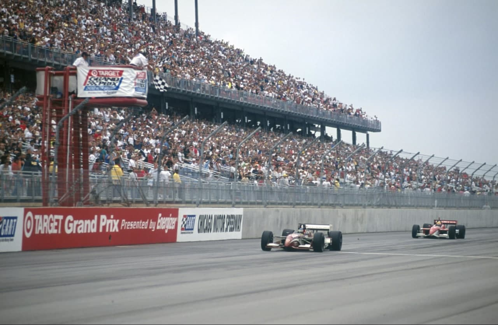
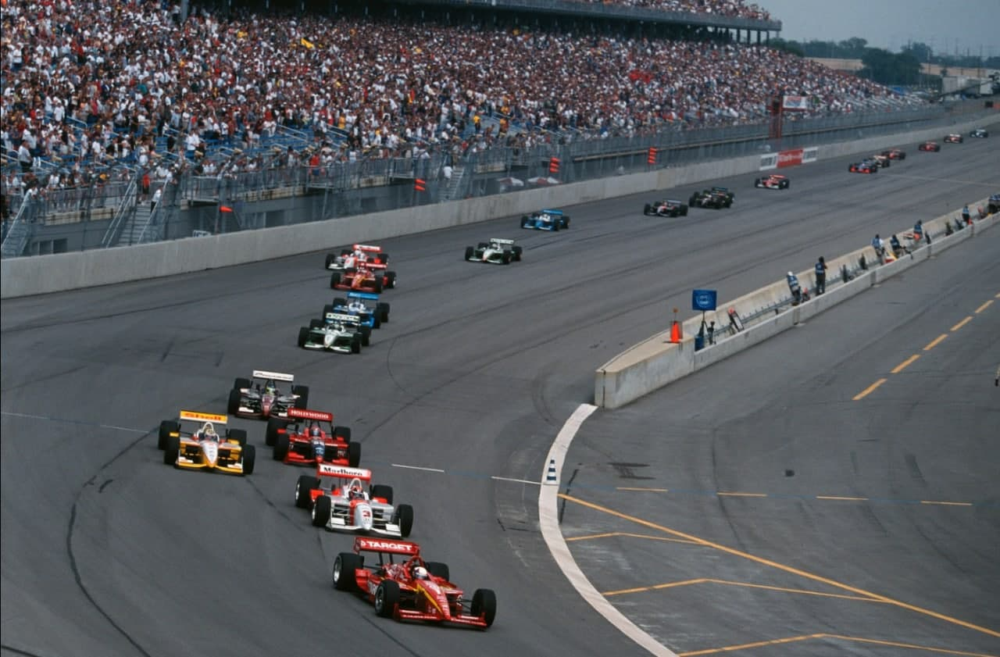
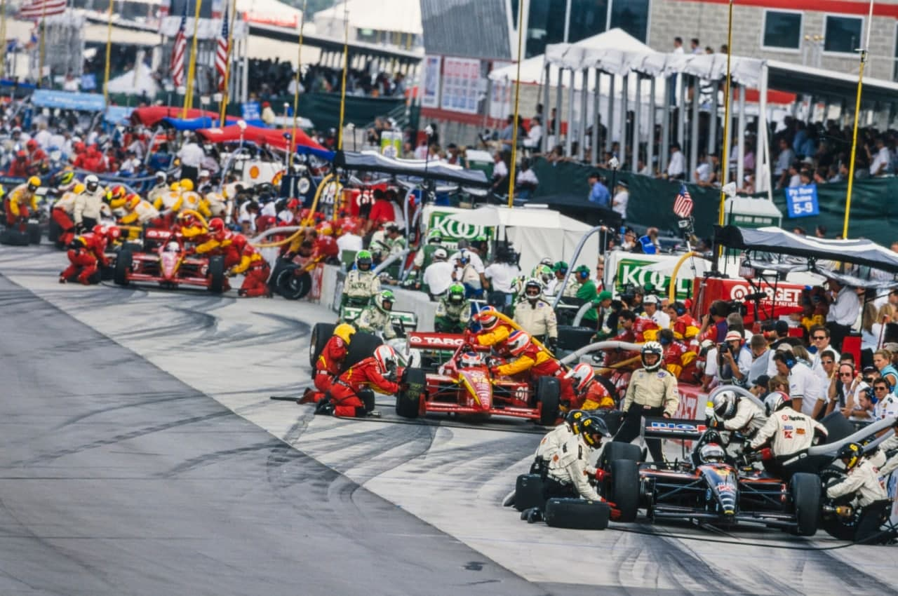
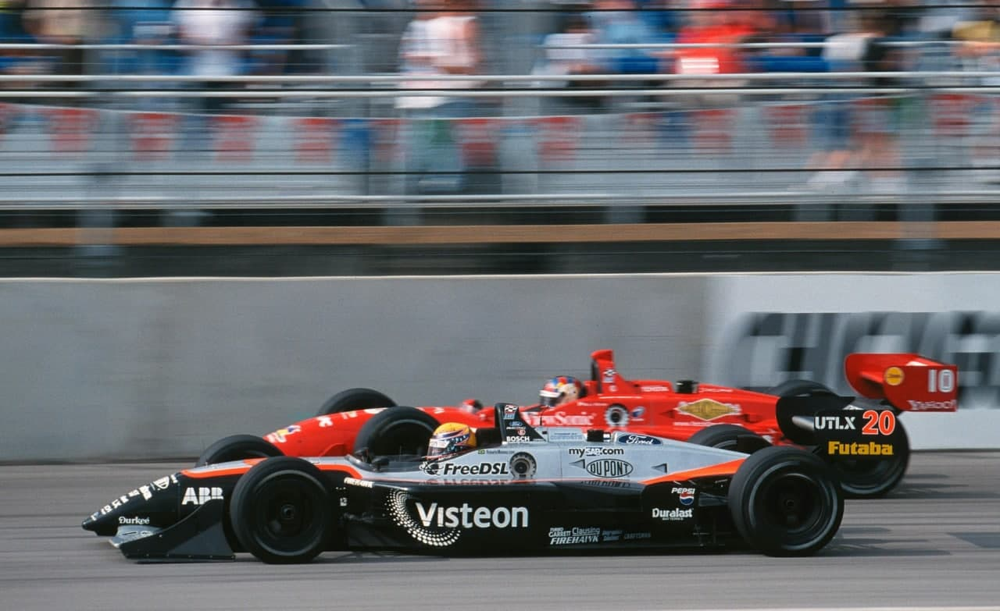
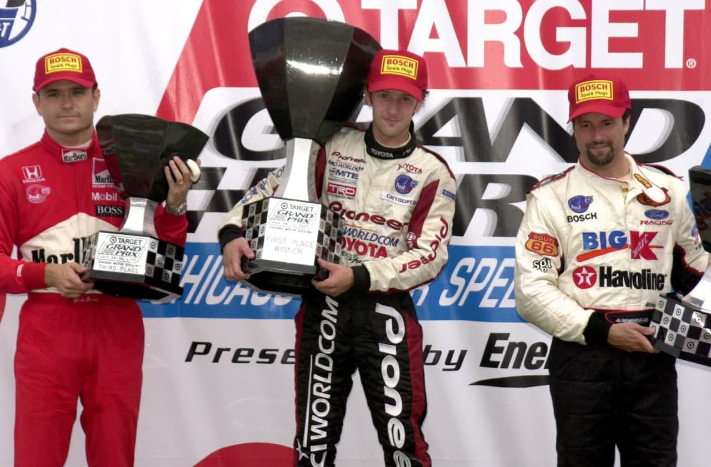

NO ALTO DO PÓDIO, MINEIRAMENTE

Habituado a vencer, Da Matta reage com descrição ao sucesso de Chicago, no dia da vitória de Rubinho.
AutoMotor
No dia em que Rubens Barrichello se desmanchou em lágrimas no pódio de Hockenheim, um outro jovem piloto brasileiro, um ano mais moço (27 anos), reagiu com muito mais sangue frio ao vencer sua primeira corrida na Cart, do outro lado do Adántico. Cristiano da Matta ganhou em Chicago uma batalha com o recordista de vitórias da categoria, Michael Andretti, mas desceu do carro como se tivesse apenas feito bem o seu dever de casa. "Sabia que, se a gente continuasse andando consistentemente entre os seis primeiros, a porta iria se abrir”, disse ele. “Nunca fiquei preocupado ou ansioso em conseguir essa primeira vitória, porque tudo é conseqüência de um trabalho bem feito." A pequena equipe PPI conseguiu um entrosamento perfeito e acertou o Reynard-Toyota de forma primorosa para o oval do subúrbio de Cicero. A missão de Da Matta foi resistir ao assédio de Andretti que também tinha um carro muito bem preparado. Mas ele não se assustou em ter o campeão com seus retrovisores. " Não era a primeira vez que eu liderava uma corrida, então eu sabia que fazer. Quem oove o discurso pode achar que é excesso de marra, mas, na verdade, é o contrário: Cristiano da Matta é tão simples que não escolhe suas palavras. Fala o que sente, embora mineiramente, com descrição. Certa vez, quando lhe perguntaram qual era o seu restaurante preferido, não pestanejou: "McDonalds. Se tiver um, em qualquer canto do mundo, está bom para eu comer.

[PARTE 2]

[PARTE 4]

[PARTE 5]
